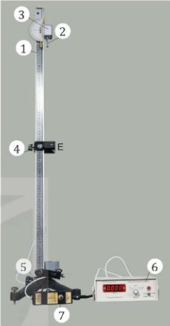

Ngày soạn:
Môn: Vật lí 10 – Bộ sách Kết nối tri thức với cuộc sống
Số tiết: 1 (Tiết 18 theo PPCT)
| Bước thực hiện | Nội dung các bước | |||||||||||||||||||||||||||||||||||||||||
|---|---|---|---|---|---|---|---|---|---|---|---|---|---|---|---|---|---|---|---|---|---|---|---|---|---|---|---|---|---|---|---|---|---|---|---|---|---|---|---|---|---|---|
|
HOẠT ĐỘNG 1: KHỞI ĐỘNG (5 phút) |
Mục tiêu: Tạo hứng thú, dẫn dắt học sinh vào bài thực hành. Nội dung: Học sinh quan sát hình ảnh và trả lời câu hỏi. Sản phẩm: Câu trả lời của học sinh. Tổ chức thực hiện:
 Hình 11.1. Bộ dụng cụ thí nghiệm đo gia tốc rơi tự do |
|||||||||||||||||||||||||||||||||||||||||
|
HOẠT ĐỘNG 2: HÌNH THÀNH KIẾN THỨC (25 phút) |
Mục tiêu: Hình thành kiến thức về mục đích, cơ sở lý thuyết và các bước tiến hành thí nghiệm đo gia tốc rơi tự do. Nội dung: Tìm hiểu dụng cụ, thiết kế phương án thí nghiệm, các bước tiến hành. Sản phẩm: Câu trả lời, kết quả thảo luận, phương án thí nghiệm. Tổ chức thực hiện: 1. Dụng cụ thí nghiệm (Hình 11.1)
2. Thiết kế phương án thí nghiệm
3. Tiến hành thí nghiệm
4. Bảng số liệu thí nghiệm Bảng 11.1. Bảng ghi kết quả thí nghiệm đo gia tốc rơi tự do
Ghi chú: Học sinh tự điền các giá trị quãng đường và thời gian đo được vào bảng. |
|||||||||||||||||||||||||||||||||||||||||
|
HOẠT ĐỘNG 3: LUYỆN TẬP (10 phút) |
Mục tiêu: Xử lý số liệu thí nghiệm, tính gia tốc rơi tự do và sai số. Nội dung: Tính giá trị trung bình, sai số tuyệt đối và sai số tỉ đối. Sản phẩm: Kết quả tính toán của học sinh. Tổ chức thực hiện:
Bảng tổng hợp kết quả tính toán (mẫu):
Kết quả đo: g = ḡ ± Δḡ = ... ± ... (m/s²) |
|||||||||||||||||||||||||||||||||||||||||
|
HOẠT ĐỘNG 4: VẬN DỤNG (5 phút) |
Mục tiêu: Vận dụng kiến thức vào thực tế và giao nhiệm vụ về nhà. Nội dung: Nhận xét, đánh giá kết quả thí nghiệm và giao nhiệm vụ năng lực số. Sản phẩm: Câu trả lời của học sinh, sản phẩm bảng/đồ thị. Tổ chức thực hiện:
|
|||||||||||||||||||||||||||||||||||||||||
.................................................................................................................
.................................................................................................................
.................................................................................................................
Duyệt TCM